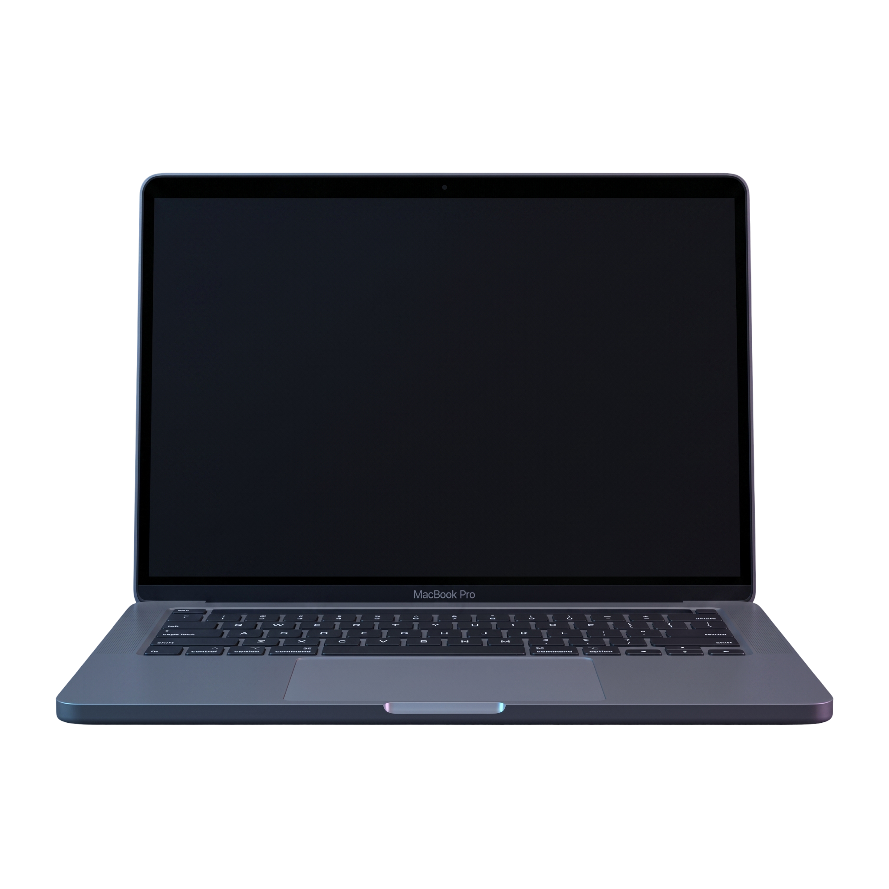
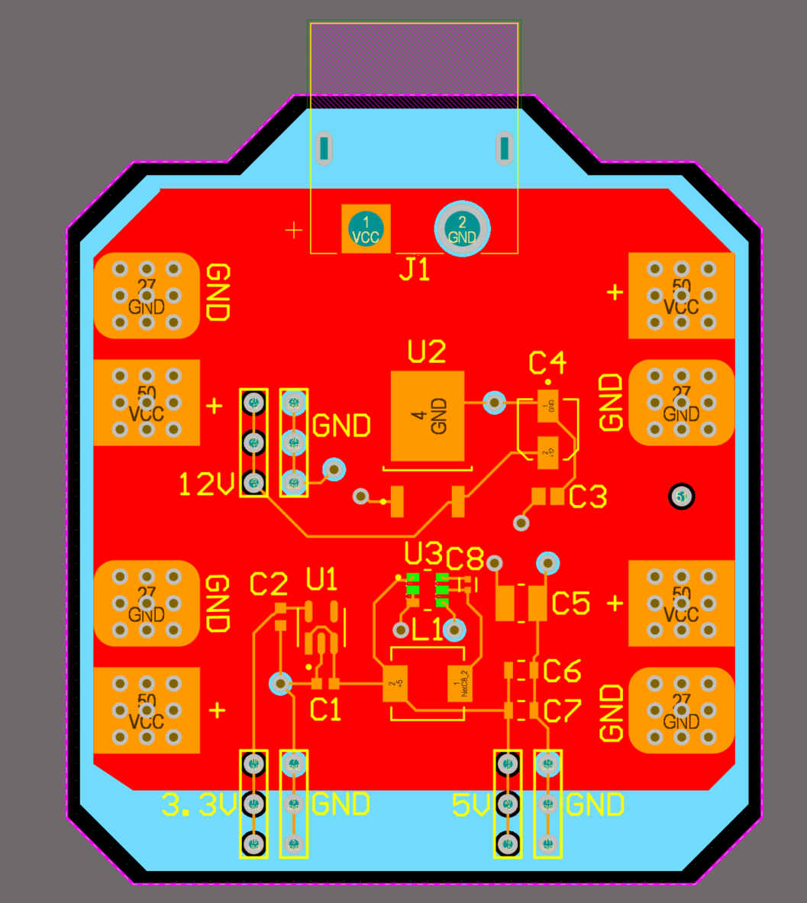
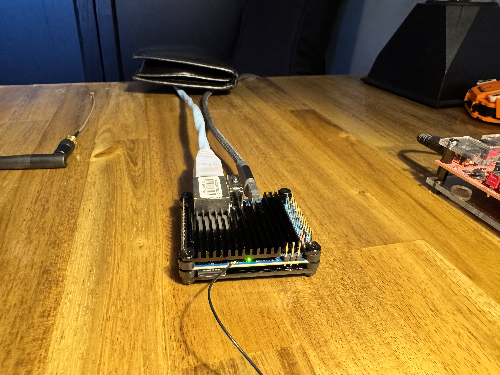

Hi, I'm Jonathan.
I'm a 3rd-year Electrical Engineering student at Carleton University.
I'm passionate about hardware, wireless systems, robotics and artificial intelligence.
A bit about myself
I grew up in Ottawa with a longstanding interest in how things work at a physical and mechanical level. That curiosity shapes how I approach engineering throughout my studies and personal projects. I like taking an idea from a rough sketch to something that actually works, testing it until it breaks or reaches its limit, figuring out why, and then fixing it properly. I've picked up a broad set of practical skills that way and constantly try to gain more experience in whatever ways I can.
Outside of school, I work as a lifeguard, swim instructor, and first aid instructor with the City of Ottawa. I have coached and competed nationally in competitive speed skating, which has helped me build up a good set of interpersonal and self-development skills through both the work and sport avenues. I also have an interest in personal finance and economics, which has grown into a broader curiosity about practical AI and where it genuinely fits into engineering and finance, rather than the superficial hype around it.



Check out my builds!
A growing list of projects and challenges I have tackled - click Learn More → on any card for the full story.

Modular Bicycle Lighting System
Designed and built a weatherproof RGBW lighting system for bicycles using a custom PCB coupled with Arduino and Adafruit components.
Learn More →
Electric Go-Kart
Built a 1.6kW electric go-kart from a hand-built steel frame to a complete electrical power system.
Learn More →
Avionics & Power Distribution PCB for RC Plane
Building the flight controller, power system and wireless control for a twin-motor RC aircraft team project.
Learn More →
Full-Stack AI Secretary For Enhanced Personal Decision Making
Set up an AI-powered personal secretary that manages my time by merging different sources and my investment portfolio into one prioritized daily brief; displaying core insights on a webpage and an ESP32 controlled LED wall
Learn More →
MOSFET Switched Off-Road System
Integrated high-power LED lighting into a vehicle using MOSFET switching. Conducted a full thermal analysis of the system to ensure safety
Learn More →Industries that interest me

Cutting-Edge Robotics
Legged and humanoid robots closing the gap between lab demos and real-world deployment. I'm most interested in advancements with actuator technology and integrations with machine learning.

Wireless & Space Communications
6G and IoT requirements are pushing wireless communication to its limits. I have a fascination for satellite constellations and am keen to understand antenna designs and endless uses for wireless communication.

Machine Learning & AGI
Looking past the buzzwords, I am excited to see the real use cases for AI systems within certain sectors like transport, industry, chip design and global finance. I am trying to embrace tools as they become available and learn how they can become powerful personal and corporate systems.
Let's connect.
I'm currently looking for a 12-month co-op starting January 2027. Always happy to talk about a project, a role, or just electronics and technology in general.